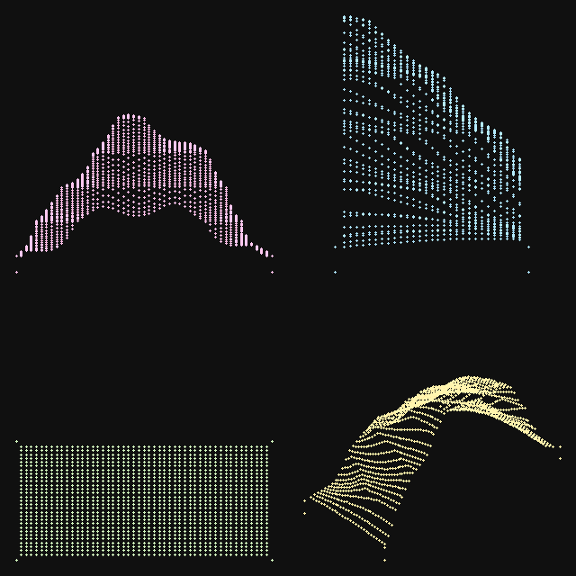
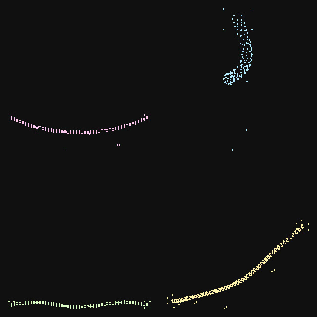
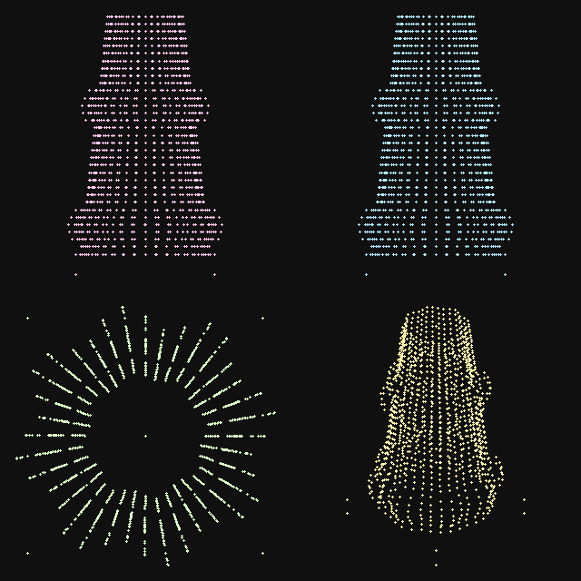
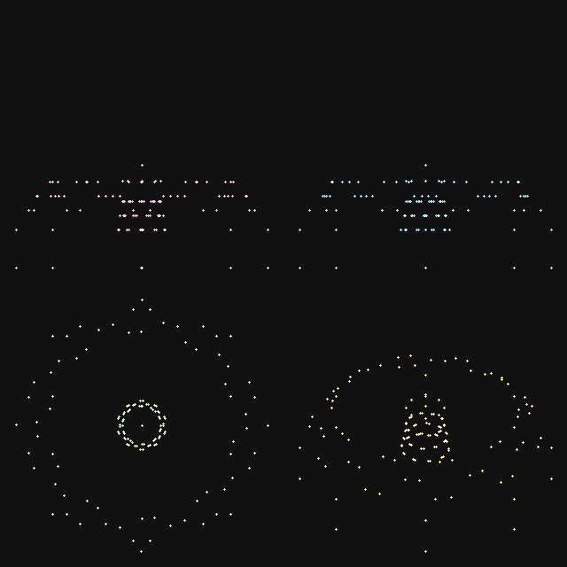
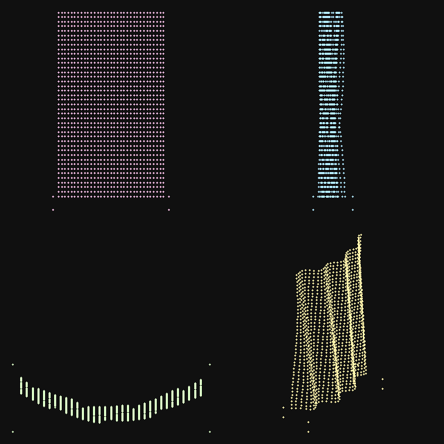
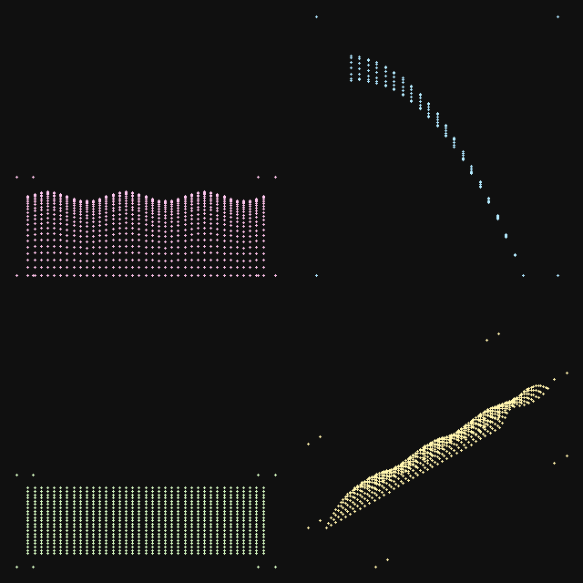
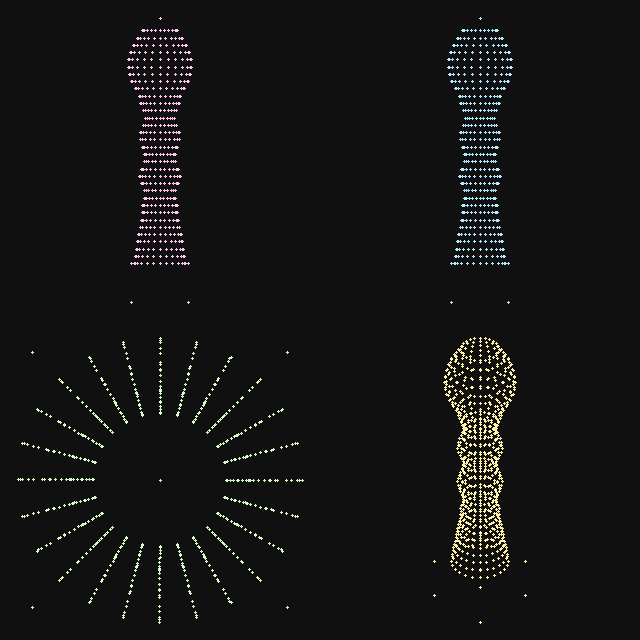
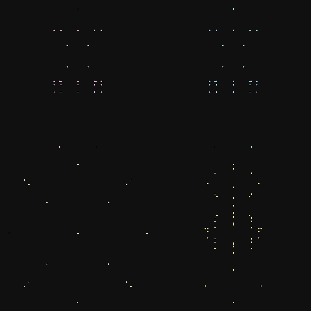
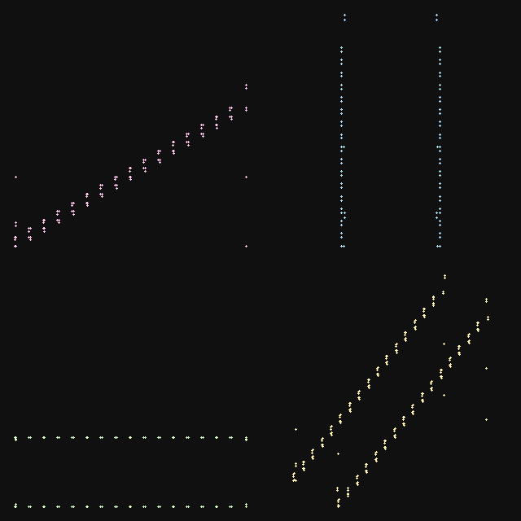
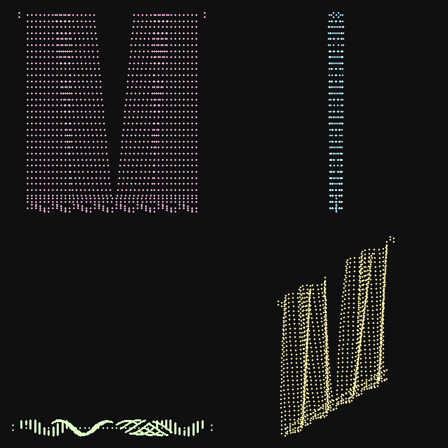

WeaveRidge
Sparkle 0.85

Shoulder Fold · Bedrock Terraces
Monumental draped anatomical shoulder landform and stepped terrace buttress for mountain climbing routes.
Faraway Mother · World-Building Suite
Ten handcrafted procedural structures engineered to close out the tensile landscape across WeaveRidge, LaceCanopy, FrillValley, and ResonantSeamWay. Fully synthesized with pure-mathematics Copernicus texture networks, Nanite clusters, and HoYoverse/Infinity Nikki atmospheric convergence.

Monumental draped anatomical shoulder landform and stepped terrace buttress for mountain climbing routes.

High-tension catenary suspension cable with axial twist coils and wind-reactive hanging veil streamers.

Stratified pleated limestone karst pinnacle with scalloped petticoat flounces and flat walkable observation caps.

Monumental architectural floral blossom featuring logarithmic phyllotaxis petals and an emissive stamen dome.

Monumental amphitheater cliff cascade sculpted like gathered tresses of hair channeling stepped silk water chutes.

Broad-crested masonry weir holding back turquoise lake waters, with crenellated overflow teeth and discharge apron.

Monumental spindle stele marking seam boundaries. Turned silhouette with cord groove, acorn finial, and plinth.

Canal walkway pathway illumination bollard with mooring ring, pierced filigree lantern cage, and floating gem core.

Arched ribbon flight of stairs with curved cantilevered treads, arched underside spandrel, and continuous balustrade.

Suspended grand translucent silk/lace curtain veil with sinusoidal drape folds, parted center opening, and hem flounce.